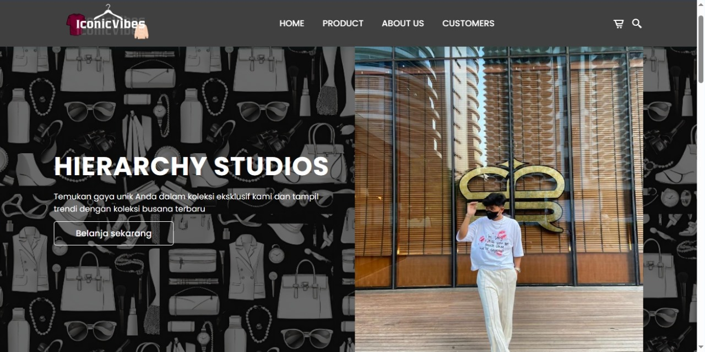
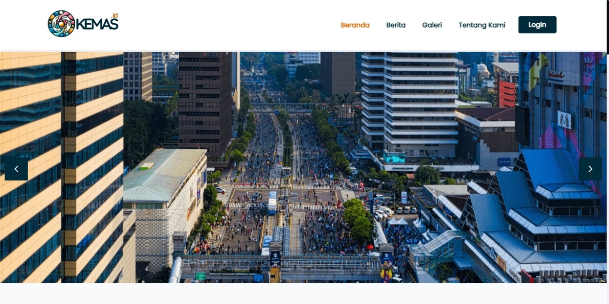

IconicVibes
"IconicVibes" adalah sebuah proyek website online shop yang menampilkan koleksi produk baju, celana, topi, cincin, dan sepatu.
Kemas.Id
Platform digital yang dirancang untuk meningkatkan kualitas hidup masyarakat melalui berbagai layanan dan fitur. Aplikasi ini bertujuan untuk menjadi jembatan penghubung antara masyarakat dengan berbagai sumber daya dan bantuan yang dapat mendukung dan memudahkan pelayanan Masyarakat di lingkungan RT. Proyek ini dibuat sebagai tugas akhir program MSIB.